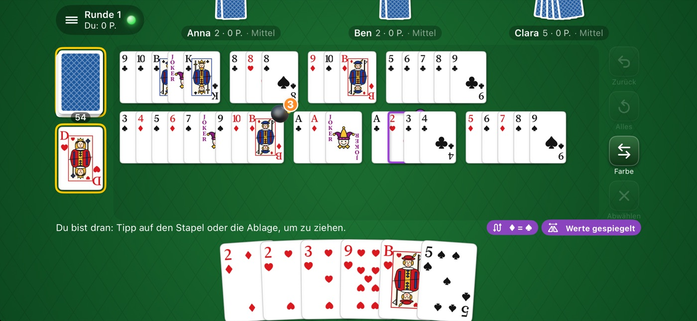
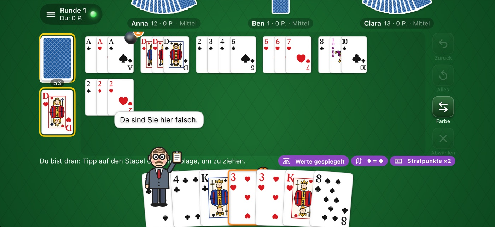
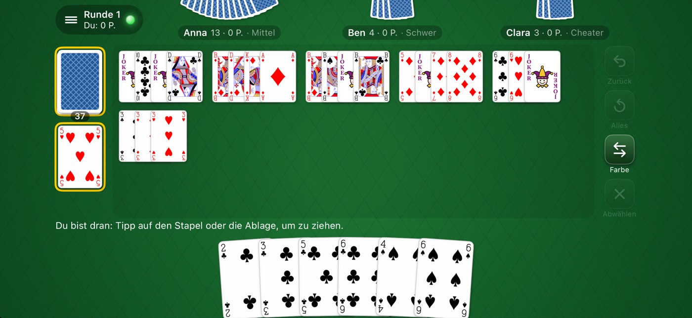

Crazy Rommé
Rommé gegen bis zu fünf Computergegner – klassisch oder komplett verrückt.
Bald im App Store


Rommé, wie du es kennst
- Gegen 1 bis 5 Computergegner, jeder mit eigener Stufe: Leicht, Mittel, Schwer, Extrem oder Cheater
- Sätze und Reihen auslegen, anlegen, Joker tauschen, Hand-Rommé
- Fast jede Hausregel einstellbar – vom Ass rundherum bis zum Umbauen wie bei Rummikub
- Quer- oder Hochformat, fünf Kartendesigns, automatisches Speichern, Statistik
Und dann wird es verrückt
- Zwölf Ereignisse kommen aus dem Nichts: Inflation, Steuerprüfung, Farbtausch, Stromausfall, Erdbeben, Polizei …
- Spezialkarten wie Bombe, Heiße Kartoffel, Doppelagent, Glaskarte und Schrödinger-Karte
- Ein Beamter vom Kartenprüfungsamt spaziert über deine Karten
- Speed-Modus und „Alle gegen dich“, wenn es richtig wehtun soll
Keine Werbung, kein Tracking
- Kein Konto, keine Werbung, keine In-App-Käufe
- Keine Analyse, kein Tracking, keine Internetverbindung
- Spielstand und Statistik bleiben auf deinem iPhone